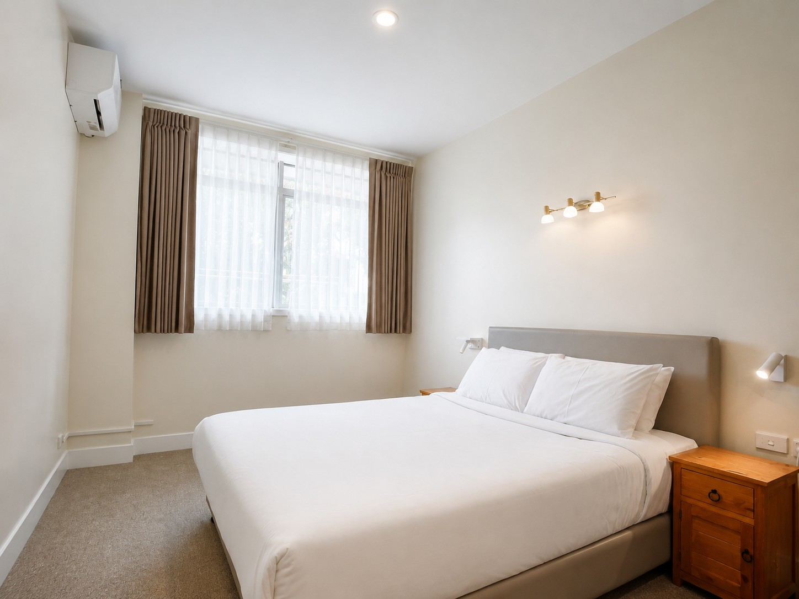
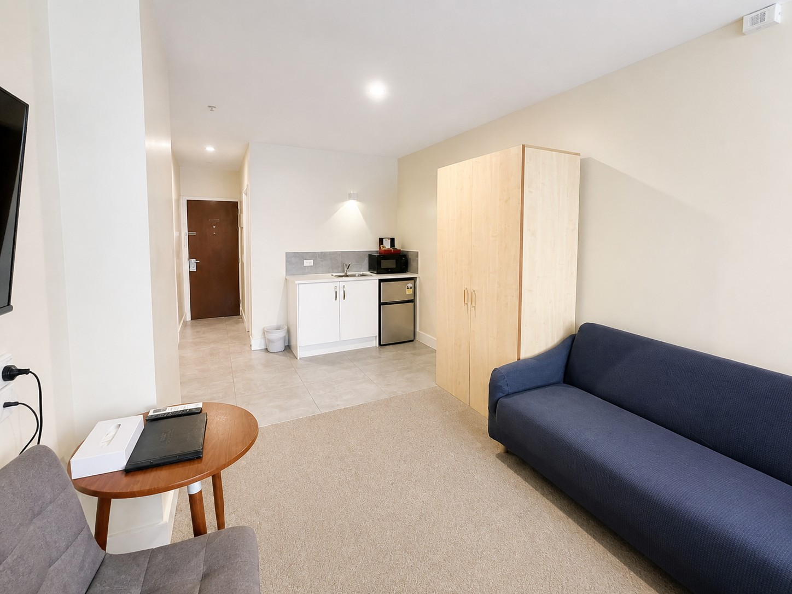
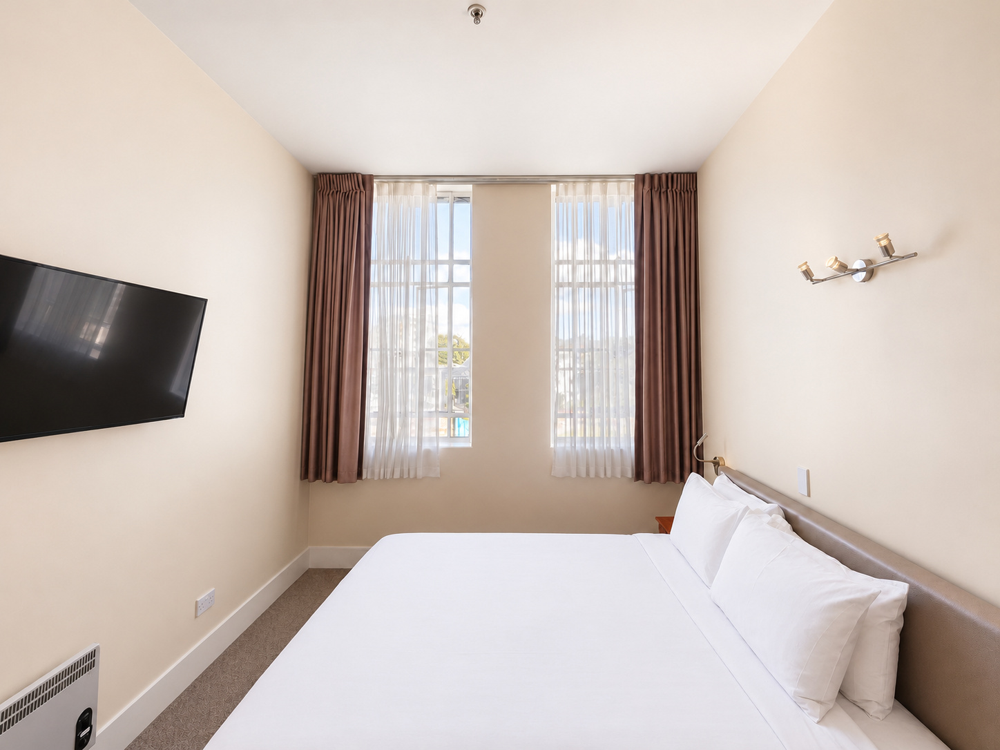
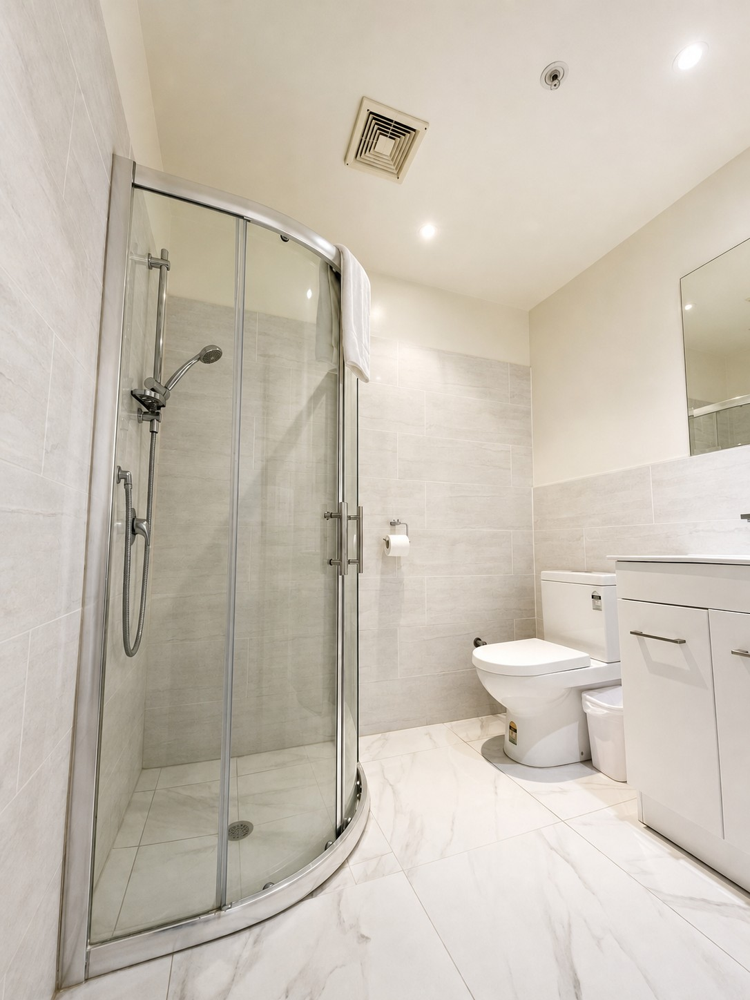
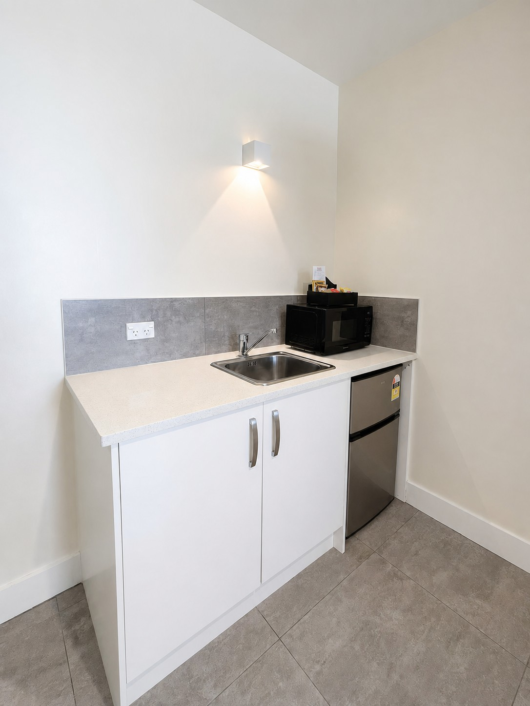

Private room · Standard occupancy 2 guests
Deluxe King






Each Deluxe King room is more spacious than a Standard Double and includes a sofa, king bed, small kitchenette, fridge and table.Book this room
- Bed
- 1 king bed
- Guests
- 2
- View
- Varies by room
Room features
- King bed
- Sofa in every room
- Air conditioning
- Small kitchenette and fridge
- Table
- Private bathroom
- Flat-screen television
- Free Wi-Fi
- Free toiletries
- Microwave and kettle
- Cutlery, dishes and utensils; cookware can be borrowed at reception
- Iron and ironing board
- Electric blanket provided in every room
Questions
How many guests can stay?
The Deluxe King accommodates two guests with its standard king bed. Extra beds are not currently provided.
Can I arrange an extra bed?
No. Extra beds are not currently provided.
What does the kitchenette include?
A fridge, microwave, kettle, cutlery, dishes and utensils are provided. Cookware is not supplied in rooms but can be borrowed at reception.
Ready to stay?
Check-in from 2 p.m. · Check-out by 10 a.m. View guest information, fees and check-in requirements.